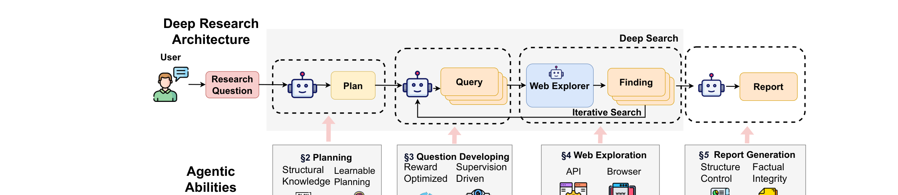

Deep Research
A Survey of Autonomous Research Agents
LLM agent가 스스로 planning·retrieval·synthesis를 수행해 웹 근거 기반의 충실한 리포트를 만든다 — 이 분야를 4단계 파이프라인으로 체계화하고, 각 단계의 방법·최적화·벤치마크를 정리한 서베이.
Wenlin Zhang, Xiaopeng Li, Pengyue Jia, Xiangyu Zhao et al. · arXiv:2508.12752 (2025) · 12 min read
오늘 다룰 흐름
서베이의 척추인 4단계 파이프라인을 따라간다 — 각 단계의 도전과제와 방법 taxonomy → 최적화 → 벤치마크 → 미래 방향.
- 문제의식 & 정의LLM 지식 경계의 한계 → deep research paradigm
- 전체 구조 (4단계 파이프라인)planning → question developing → web exploration → report generation
- §2 Planningstructured world knowledge vs learnable process
- §3 Question Developingreward-optimized vs supervision-driven
- §4 Web Explorationweb retrieval agent vs API-based
- §5 Report Generationstructure control vs factual integrity
- 최적화 · 벤치마크 · 미래 방향RL/SFT · search vs research bench · 5대 과제
문제의식 & 정의
LLM은 강력하지만 내부 지식 경계(knowledge boundary)에 갇힌다 — 학습 시점 이후·롱테일·실시간 정보를 모른다. 이를 넘기 위한 패러다임이 deep research다.
전체 구조 — 4단계 파이프라인
사용자의 research question → Plan → Query → (Web Explorer ↔ Finding의 iterative search) → Report. 각 단계 아래의 "Agentic Abilities"가 서베이의 §2–§5 분류로 이어진다.

§2Planning
research question을 실행 전에 중간 subgoal·행동의 구조화된 계획으로 변환. 도전과제: 현재 LLM의 plan은 취약(brittle)하고 모호한 질문에 약하며, 멀티스텝 plan의 내부 일관성 확보가 어렵다.
| 세부 전략 | 대표 방법 |
|---|---|
| A. Structured World Knowledge — 구조적 세계지식을 활용 | |
| Simulation | 실행 전 결과를 모의해 보고 계획 — WebDreamer |
| Modularity | 계획을 모듈로 분해 — WebPilot, WKM, Plan-and-Act |
| Adaptation | 피드백으로 계획 적응 — Thought of Search, MPO |
| B. Learnable Process — 계획 자체를 학습 | |
| Space exploration | 계획 공간을 탐색 — AgentSquare, Agent-E |
| Self-training | 스스로 데이터를 만들어 학습 — InSTA |
| Preference modeling | 선호 학습으로 계획 개선 — MindSearch, SimpleDeepSearcher, WEPO |
§3Question Developing
subgoal을 맥락에 맞는 검색 쿼리로 변환(누적된 근거에 따라). 도전과제: subgoal이 모호하면 쿼리 품질↓, 이전 history와의 coherence 부족, open-ended 문제에서 specificity↔coverage 트레이드오프.
| 세부 전략 | 대표 방법 |
|---|---|
| A. Reward-Optimized — 보상으로 쿼리 정책을 RL 최적화 | |
| Format & accuracy reward | 형식+정답 기반 보상 — Search-R1, R1-Searcher, DeepResearcher, ZeroSearch, MaskSearch, DeepRetrieval |
| Multi-dimensional reward | 정보이득·효율·지식경계 등 다차원 — InForage, OTC-PO, IKEA, AutoRefine, R-Search |
| B. Supervision-Driven — 지도/구조로 쿼리 품질 확보 | |
| Multi-agent system | 역할 분업으로 쿼리 생성·검증 — ManuSearch, Search-o1 |
| Supervision optimization | 지도 신호 최적화 — ReasonRAG (DPO + MCTS trajectory) |
§4Web Exploration
온라인 소스에서 관련 정보를 검색·탐색 (agent navigation 또는 API). 도전과제: 노이즈·중복·상충 콘텐츠를 거르며 정확 정보 확보, 상위 단계와의 단절, browser agent의 무거움 vs API의 신뢰성 격차.
| 세부 전략 | 대표 방법 |
|---|---|
| A. Web Retrieval Agents — 직접 웹을 탐색하는 agent | |
| Browser-based | 브라우저로 자율 탐색 — WebGPT, Agent-E |
| Multimodal | 화면을 보고 탐색 — WebVoyager, MM-ReAct, WebArena |
| B. API-Based Retrieval — 검색 API 호출 | |
| Industrial search | 범용 검색엔진 — Bing, Google, X |
| Domain-specific | 도메인 특화 — CNKI, BraveSearch, Bocha |
§5Report Generation
검색한 정보를 일관되고 근거 있는 리포트로 종합. 도전과제: 멀티문서·멀티홉 일관성, 장문에서의 구조 drift, 상충 소스 종합 시 factual fidelity, 단계 간 joint optimization 부재.
| 세부 전략 | 대표 방법 |
|---|---|
| A. Structure Control — 긴 리포트의 구조를 통제 | |
| Planning-based | 개요를 짜고 작성 — AI Scientist v2, LongWriter, LongDPO |
| Constraint-guided | 제약 조건으로 유도 — WebThinker, Suri |
| Structure-aware eval | 구조 인지 평가 — Long2RAG, ExPerT |
| B. Factual Integrity — 사실 무결성 확보 | |
| Faithful modeling | 출처 충실 생성 — RAGSynth, BRIDGE |
| Conflict reasoning | 상충 정보 추론 — FaithfulRAG, DRAGged |
| Factuality eval | 사실성 평가 — Face4RAG, FaithJudge, RAG-QA Arena |
최적화 기법
파이프라인을 어떻게 훈련하고 조립하나 — 학습 패러다임(좌)과 workflow 아키텍처(우).
| 범주 | 방식 · 대표 |
|---|---|
| 학습 패러다임 | |
| Reinforcement Learning | GRPO/PPO로 정책 최적화. 보상 설계: format+F1, staged, 정보이득+효율 penalty, 지식경계 인지 — Search-R1, DeepResearcher, InForage |
| Supervised Fine-Tuning | 제약·스타일 instruction tuning(Suri), DPO+MCTS trajectory 랭킹(ReasonRAG) |
| Contrastive / Curriculum | 성공/실패 trajectory 대조(Avatar), 쉬운→어려운 단계 학습(AI Scientist-v2, SimpleDeepSearcher) |
| Workflow 아키텍처 | |
| Single-agent | 한 모델이 전체를 end-to-end RL — DeepResearcher, WebThinker, Search-R1 |
| Multi-agent | plan·query·retrieve·write 분업 → 모듈 최적화·병렬 — AI Scientist, OpenResearcher |
벤치마크 — 어디까지 평가하나
평가 범위가 4단계 중 어디를 덮느냐로 갈린다. search-oriented는 P·QD·WE(찾기까지), research-oriented는 RG(리포트 생성)까지 전 파이프라인을 본다.
| 벤치마크 | P | QD | WE | RG | 평가 지표 |
|---|---|---|---|---|---|
| Search-oriented — 찾기/추론까지 (단답) | |||||
| GAIA | ● | ● | ● | ○ | Exact Match |
| BrowseComp | ● | ● | ● | ○ | Accuracy · Calibration |
| Humanity's Last Exam | ● | ● | ● | ○ | Accuracy · Calibration |
| Mind2Web 2 · WebArena · GPQA | ● | ● | ● | ○ | Success Rate · Accuracy |
| Research-oriented — 리포트 생성까지 (전 파이프라인) | |||||
| DeepResearch Bench | ● | ● | ● | ● | RACE (4차원) · Agreement |
| DeepResearchGym | ● | ● | ● | ● | Precision·Recall·Insight |
| MedBrowseComp | ● | ● | ● | ● | Accuracy (의료) |
열린 과제 & 미래 방향
서베이가 꼽는 다섯 가지 — 지금 deep research가 못 하는 것들. (네 연구 거리 후보)
- ① Multi-tool integration — 지금은 검색엔진에만 의존. 실제 리서치엔 API·DB·코드 저장소·구조화 데이터 질의가 필요.
- ② Factuality — 멀티소스 종합 시 사실 오류 위험. 명시적 grounding·출처 attribution 메커니즘이 필요.
- ③ Multimodal reasoning — 파이프라인이 거의 텍스트 전용. 이미지·PDF·시각화·스캔 문서로 확장(과학·의료·공학에 필수).
- ④ Workflow design & optimization — task 간 일반화되는 workflow 학습 부재, 높은 학습비용·sparse reward.
- ⑤ Personalization — 지속적 user modeling 부재. privacy-aware·continual learning 필요.
참고 문헌
원문과 핵심 인용. 본 자료는 서베이를 정리한 학습용 덱.
- Zhang, Li, Jia, Zhao et al. Deep Research: A Survey of Autonomous Research Agents. 2025. arXiv:2508.12752 — 본 덱의 기반, Fig 1·Table 1–5 출처
- §3 Question Developing 계열 — Search-R1 2503.09516 · R1-Searcher 2503.05592 · Search-o1 2501.05366
- §4·§5 계열 — WebGPT 2112.09332 · WebVoyager · WebThinker 2504.21776
- 벤치 — GAIA 2311.12983 · BrowseComp 2504.12516 · HLE 2501.14249 · DeepResearch Bench 2506.11763
- 연결 자료 — 같은 분야 입문 덱 deep-research.html · 소스 노트 content/research_notes/DEEP_RESEARCH_PRIMER.md